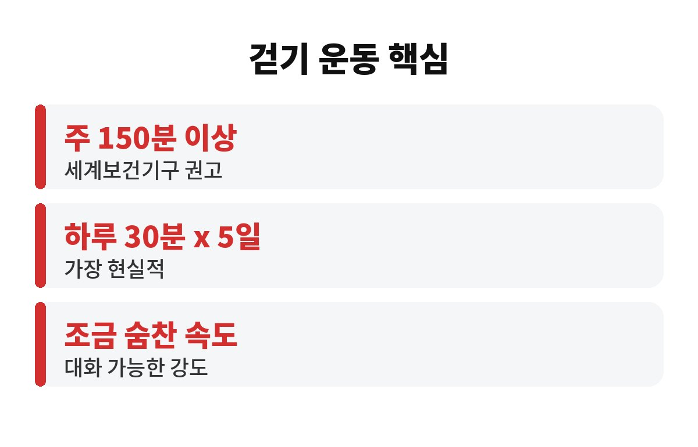
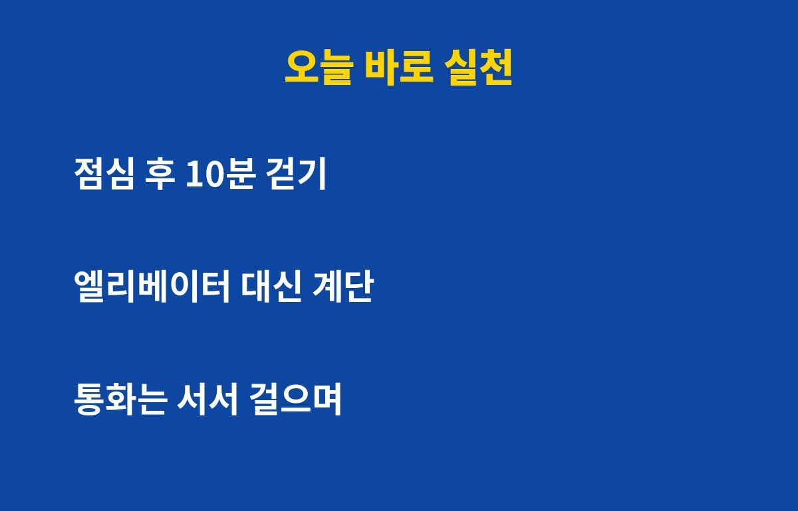

걷기 운동은 일주일에 150분 이상, 쉽게 말해 하루 30분씩 5일이 세계보건기구가 권하는 기본 기준이에요. 40·50대라면 이 기준을 채우고 있는지 지금 한번 떠올려 보세요.
바쁘다는 이유로 걷기 운동을 미뤄 왔다면, 몸은 이미 조용히 신호를 보내고 있을지도 몰라요. 그 신호가 뭔지 궁금하지 않으세요?
150분이라는 숫자는 누가 대충 정한 게 아니에요. 세계보건기구는 성인에게 일주일에 150분 이상의 중간 강도 신체활동을 권하고 있어요. 걷기 운동은 그 중간 강도에 딱 맞는 가장 쉬운 방법이죠.
여기서 중간 강도란 걸으면서 대화는 가능하지만 노래를 부르기는 어려운 정도의 속도를 말해요. 산책하듯 느릿느릿 걷는 것과는 조금 달라요. 살짝 숨이 차고 몸이 따뜻해지는 느낌이 들어야 걷기 운동 효과를 제대로 기대할 수 있어요.
그리고 꼭 한 번에 30분을 채울 필요는 없어요. 10분씩 세 번 나눠 걸어도 합산해서 인정되거든요. 그래서 바쁜 직장인에게도 현실적인 기준이에요.
활동량이 부족하면 몸은 이런 식으로 티를 내요. 계단 몇 층만 올라도 숨이 차고, 아침에 일어나도 개운하지 않고, 허리와 무릎이 뻐근하고, 이유 없이 기운이 없고, 밤에 잠이 얕아지죠.
나이가 들수록 근육은 서서히 줄어들고 혈관과 관절은 예전 같지 않아요. 특히 40·50대는 몸이 바뀌는 시기라서, 활동량이 줄면 체중, 혈압, 혈당 같은 수치가 함께 흔들리기 쉬워요. 이런 변화는 하루아침에 오는 게 아니라 천천히 쌓여서 어느 날 건강검진 결과표로 나타나요.
물론 위 증상이 있다고 모두 운동 부족 때문이라고 단정할 수는 없어요. 다만 걷기 운동 같은 기본 습관부터 챙겨 보면 좋은 신호인 건 맞아요. 증상이 오래 이어진다면 병원에서 확인받는 것도 잊지 마세요.

정답은 내가 꾸준히 할 수 있는 시간이에요. 아침이든 점심이든 저녁이든, 지속할 수만 있다면 그게 가장 좋은 시간이거든요.
다만 몇 가지 팁은 있어요. 식사 후에 가볍게 걸으면 소화에도 도움이 되고 졸음도 쫓을 수 있어요. 아침 햇볕을 쬐며 걸으면 하루 리듬을 맞추는 데 도움이 되고요. 저녁에는 너무 격하게 걷기보다 편안한 속도가 잠드는 데 좋아요.
겨울이 다가오면 새벽의 찬 공기가 부담일 수 있어요. 혈압이나 심장이 걱정되는 분이라면 이른 새벽보다 해가 뜬 뒤나 낮 시간을 추천해요. 걸을 때는 신발이 편한지, 바른 자세인지도 같이 챙겨 주세요.
시간을 따로 내려고 하면 오래 못 가요. 일상 속에 끼워 넣는 게 훨씬 쉬워요. 점심 먹고 10분 걷기, 퇴근길에 한 정거장 먼저 내리기, 엘리베이터 대신 계단 이용하기, 통화는 서서 걸으며 하기 같은 식이에요.
이렇게 하루 10분씩 세 번만 해도 30분이 돼요. 일주일에 5일이면 150분이 되고요. 처음부터 완벽하게 채우려 하지 말고, 이번 주는 3일만, 다음 주는 4일로 조금씩 늘려 가면 부담이 훨씬 줄어요.
혼자 하면 흐지부지되기 쉬우니 가족이나 친구와 같이 걷는 것도 좋은 방법이에요. 부모님과 함께 걸으면 건강도 챙기고 대화할 시간도 생기니 일석이조죠.

오랫동안 거의 걷지 않았던 분이라면 처음부터 욕심내면 오히려 무릎이나 발목에 무리가 갈 수 있어요. 첫 주에는 하루 10분만 걸어도 충분해요. 몸이 적응하면 5분씩 늘리고, 한 달쯤 지나 30분이 편해지면 그때 속도를 조금 올려 보세요.
걷기 전에는 발목과 종아리를 가볍게 풀어 주고, 끝나고는 천천히 속도를 줄이며 마무리하는 게 좋아요. 쿠션이 적당한 운동화를 신고, 물도 한 모금씩 챙기면 훨씬 편하게 걸을 수 있어요. 걷는 도중 가슴이 답답하거나 어지럽다면 바로 멈추고 쉬어야 해요.
스마트폰 걸음 수 기록을 활용하면 동기부여가 돼요. 어제보다 조금 더 걸었다는 작은 성취감이 쌓이면 걷기 운동이 숙제가 아니라 즐거운 습관이 된답니다. 한 달만 꾸준히 해 보면 계단 오를 때 숨이 덜 차다는 걸 느끼실 거예요.
오늘 하루, 걷기 운동을 몇 분이나 하셨나요? 못 채웠다고 자책할 필요는 없어요. 지금부터 10분만 걸어도 충분히 좋은 시작이에요. 댓글로 나만의 걷기 팁도 알려 주세요. 도움이 되셨다면 구독해 주시면 다음 건강 이야기도 바로 받아보실 수 있어요.
※ 이 글은 일반적인 건강 정보이며 진단·치료를 대체하지 않아요. 지병이 있거나 증상이 계속되면 전문의와 상담하세요.